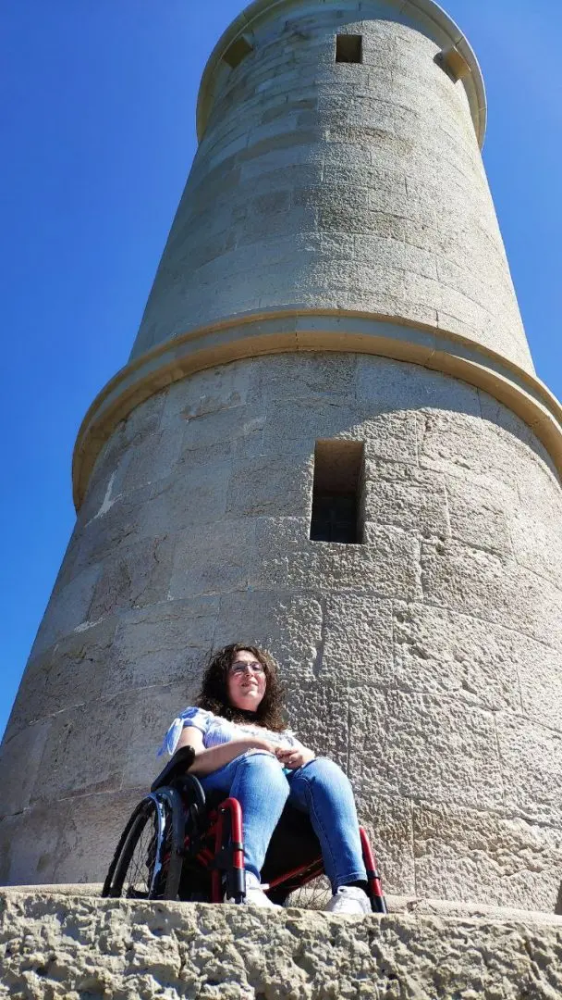
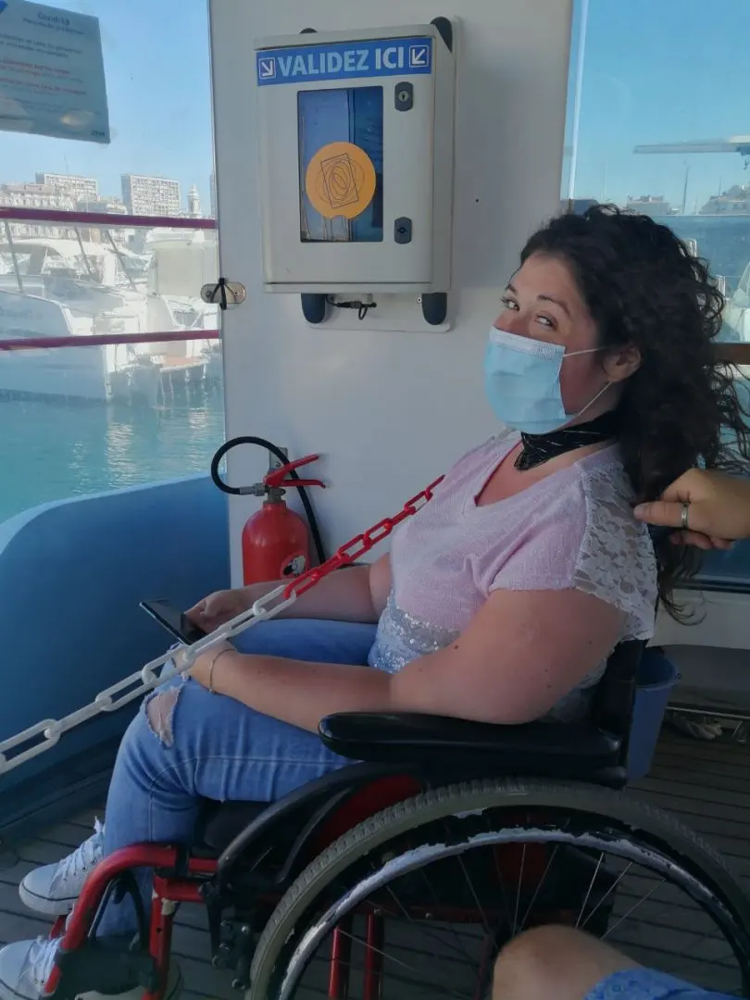
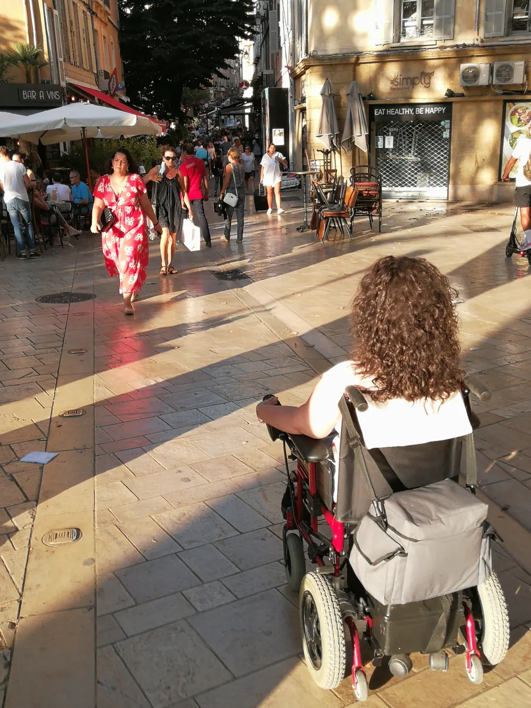

Conoscete il termine ABILISMO?

Conoscete il termine "ABILISMO"?.
Io ho conosciuto questo termine per puro caso, nelle mie letture e nella mia determinazione nell'abbattere i paletti della società.
Il termine abilismo racchiude tutto ciò che io ho sempre cercato di far capire agli altri.
Comprende sia le azioni più eclatanti, come impedire l’accesso a determinati luoghi o informazioni a causa di barriere architettoniche e sensoriali, che quelle più sottili e infime.

Ad esempio usare il nome di determinate disabilità per offendere.
L’abilismo descrive le persone definendole unicamente per la loro disabilità. e attribuisce a priori certe caratteristiche, imprigionandole in stereotipi in cui risultano diverse e irrevocabilmente inferiori.
Abilismo è il modo di vedere di persone chiuse che additano, etichettano, marchiano le persone con disabilità solo ed unicamente per la condizione fisica e non considerandole come PERSONA in primis.
Non prendono in considerazione che le persone con disabilità, sono innanzitutto Persone con un nome e non: "quella sulla sedia a rotelle", "Il down", "il ragazzo 'costretto' a portare le stampelle" ecc ecc.
Siamo persone con pregi e difetti, desideri e capricci, sogni e speranze.
La vera disabilità si vede nelle barriere architettoniche che incontriamo in giro per il mondo, ed è lì che ci sentiamo discriminati di più, non di certo vedendo pietismo e compassione.
Quei sorrisi di circostanza che dimostrano tutta la commiserazione.
Noi ci sentiamo discriminati quando dobbiamo premere un treno e dobbiamo, per forza di cose, avvisare giorni prima della presenza di una sedia a rotelle; altrimenti non possiamo prendere un treno al volo.
Ci sentiamo discriminati quando andiamo in un hotel e troviamo gradini senza discese. Oppure quando prendiamo il bus e non sono muniti di pedane automatiche e dobbiamo, se tutto va bene, aspettare il prossimo bus.

Ci sentiamo discriminati laddove la disabilità non è vista come normalità ma ancora come un peso e te lo fanno anche notare.
Tante persone sono convinti che poiché una persona sia disabile, sia inevitabile infelice.
Un errore che si fa quasi sempre e lo si nota poi negli sguardi.
Di sicuro non potremmo saltare, correre, scavalcare un muro o salire le scale, ma viviamo comunque una vita normale e dignitosa.
Anche noi pensiamo, studiamo, lavoriamo, amiamo, facciamo movida.
Non è detto che una sedia a rotelle ci impedisca di fare tutto quello che una persona 'normodotata' fa.
Normodotata: (come sono abituati a definire coloro che camminano).

Anzi, una sedia a rotelle o due stampelle, sono un supporto ed un aiuto importante per vivere ancora di più a pieno la nostra vita.
Ecco perché non dobbiamo vergognarci di mostrarci per ciò che siamo, non dobbiamo nasconderci e nemmeno sentirci inadeguati.
La vita è bella perché è varia, ogni vita è diversa da un'altra.
Forse l'unica cosa che potete fare voi tutti, che non avete problemi di barriere architettoniche è proprio quella di aiutare noi a diffondere il messaggio di normalità.
Affinche quella normalità che si scrive si possa anche mettere in pratica.